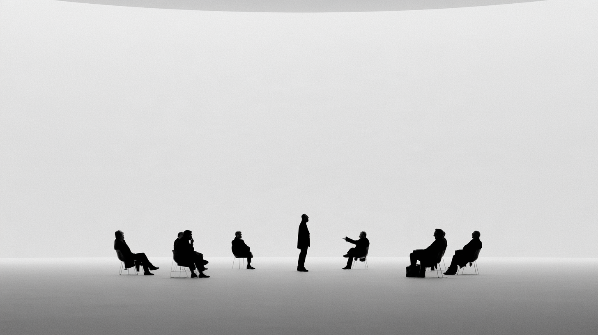
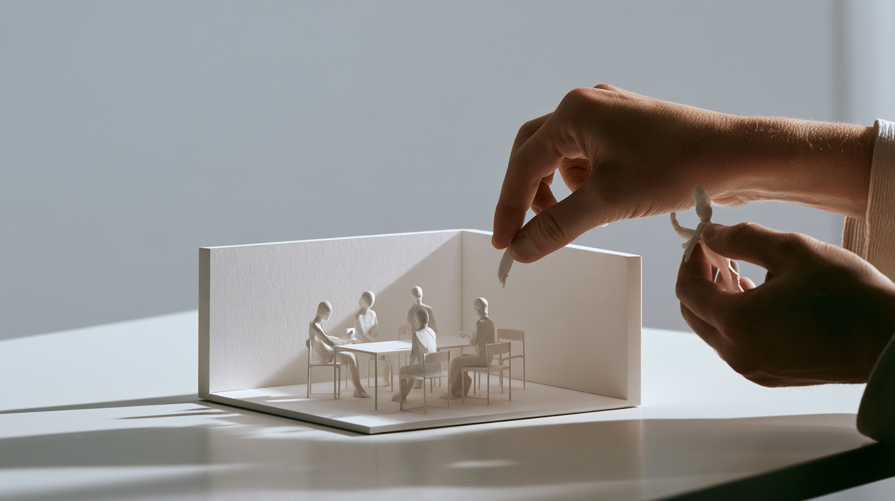

Salon
Don't give me an answer.
Give me the right room.

The premise
We already know how to ask one intelligence for an answer. What if instead we asked it to assemble the people who could find one?
You bring the problem. The system composes the room.
It's composition.
The right group isn't simply a list of specialties. The people in a great working session change what everyone else is capable of contributing.
Chemistry
A team can need expertise. It can also need curiosity, skepticism, warmth, humor, patience, taste, generosity, irreverence or someone who makes everyone else feel valued.
Sometimes the missing capability isn't knowledge. It's a change in disposition.

Malleable
In a human team, changing the composition has consequences. People experience exclusion, status, favoritism and rejection. Today's intervention changes tomorrow's relationship.
Synthetic participants make composition safely reversible. Add someone. Remove them. Try another group. Restore an earlier state. Branch the conversation.

Subtract
Changing the room doesn't always mean adding expertise.
Maybe everyone leaves except two people. Maybe the facilitator goes. Maybe the skeptic stays. Maybe the problem needs intimacy instead of breadth.
Change what becomes possible.
State
The same people can think differently under different conditions.
After hours of work, take it to the bar. The expertise hasn't changed. The social state has. Formality falls. Association widens. Humor enters. Someone says the thing they wouldn't have said in the workshop.
Design the conditions.
Then bring them back to the room.
Memory
The Salon can persist beyond a session. It remembers who was present, what was discussed, where disagreement remained, which ideas survived and which combinations of people worked unusually well.
You can leave and return. Restore an earlier group. Branch it. Send something in for discussion and come back later.
It is a place with memory.
A great room remembers how.
You don't operate the computer.
You compose the conditions under which thinking happens.
Salon is not a new kind of AI. It is a human model for orchestrating intelligence: a room whose participants, chemistry, state and history can be composed around the work.